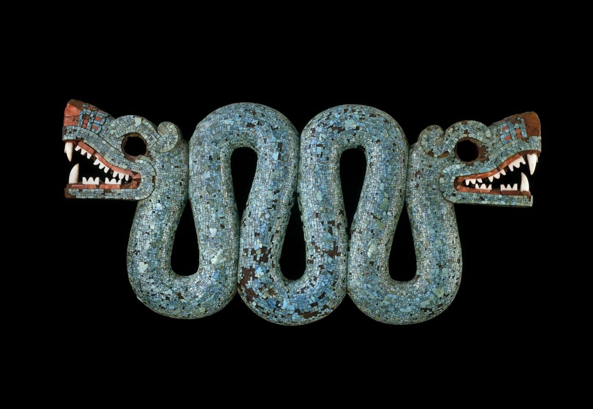
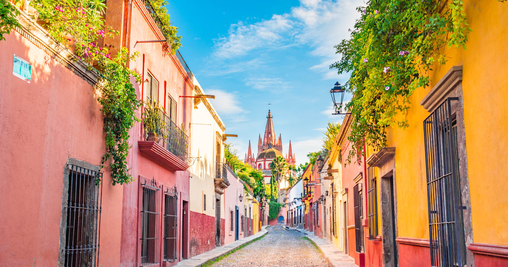

Мексика расположена на юге Северной Америки и занимает большую часть Средней Америки. На севере Мексика граничит с США (а именно со штатами Калифорния, Аризона, Нью-Мексико и Техас), длина границы 3141 км. К востоку от города Сьюдад-Хуарес до Мексиканского залива граница проходит по извилистой реке Рио-Гранде. Несколько естественных и рукотворных отметок определяют границу с США к западу от Сьюдад-Хуарес до Тихого океана.
С запада и юга Мексику омывает Тихий океан, а с востока – Мексиканский залив и Карибское море. На юго-востоке Мексика граничит с Гватемалой (871 км) и Белизом (251 км). Мексика является северной частью Латинской Америки и самой густонаселённой испаноговорящей страной.
Практически вся территория Мексики находится на Северо-Американской плите, только полуостров Калифорния находится на Тихоокеанской плите и Плите Кокос. С точки зрения физической географии, территория восточнее перешейка Теуантепек, которая составляет 12,1 % территории страны и состоит из пяти мексиканских штатов Кампече, Чьяпас, Табаско, Кинтана-Роо, и Юкатан расположена в Центральной Америке. С точки зрения геологического строения Транс-мексиканский вулканический пояс отделяет северный регион страны. Геополитически Мексика считается североамериканской страной.
Общая площадь Мексики составляет 1 972 550 кв. км, в том числе около 6 тыс. кв. км островов в Тихом океане (включая остров Гуадалупе и архипелаг Ревилья-Хихедо), Калифорнийском и Мексиканском заливах и Карибском море. По площади территории Мексика занимает 14 место в мире.
Длина береговой линии Мексики составляет 9330 км – 7338 км с тихоокеанской стороны и 2805 км с атлантической. Исключительная экономическая зона Мексики, которая простирается на 370 км от обоих побережий, занимает площадь 2,7 млн кв. км. Ширина мексиканской суши уменьшается при движении к югу от границы с США, а затем изгибается к северу в виде 500-километрового полуострова Юкатан, так что столица штата Юкатан город Мерида оказывается севернее чем Мехико или Гвадалахара.
Часто в мультиках могут упоминаться эти маски

Это двух головая змея(как из мультика "Книга Жизни")

Это улица в Мексике
 о нас
другие сайты
те кто поддерживал этот проект
регестрация
другое
о нас
другие сайты
те кто поддерживал этот проект
регестрация
другое